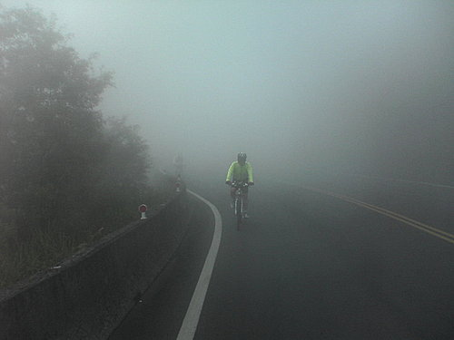

目 的：
以更高、更快、更強的奧林匹克格言為目標，以不在征服他人，而在自我奮鬥為理念，追求永不放棄之運動精神及毅力。
指導單位：
行政院體育委員會、中華奧林匹克委員會
主辦單位：
南投縣政府、中華民國挑戰者運動協會、台北市自由車委員會
協辦單位：
太魯閣國家公園管理處、林務局東勢林區管理處、埔里鎮公所、仁愛鄉公所、清境觀光發展協會、埔里鎮警察局、仁愛鄉警察局、百客單車俱樂部
贊助單位：邀約中
活動日期：2008年9月7日（星期日）
路線海拔：
埔里地理中心碑(里程0K/海拔450M)→人止關(16K/ 790M )→霧社(22K/ 1170M )→清境(29K/ 1600M )→翠峰(35K/ 2330M )→鳶峰(45K/ 2730M )→昆陽(52K/ 3100M )→武嶺（55K/ 3275M）
報到時間：9/6日18:00時~20:00時及9/7日05:30時~06:00時(地理中心碑)
領隊會議：9/6日19:00時(於地理中心碑)
出發時間：9/7日06:10時起至06:30時止(於地理中心碑)
限定時間：7小時
關門時間：終點關門時間為當日13:30時（於武嶺停車場）
參加對象：
具有長程及登山騎乘經驗且願接受考驗者
參加須知：
1.本活動是一項難度極高且俱有危險性的單車挑戰騎乘活動，有心臟病或心血疾病、高山症患者，報名前請審慎斟酌自身體能狀況與評估風。
2.路線為台14線與台14甲線為中部東、西向唯一道路通往梨山、花蓮的交通要道，因屬山區道路故路面較為窄小，且周遭熱門景點眾多，交通較為擁擠，故無法全線交通管制，僅由工作人員做部份交通疏導，請參加者務必遵守工作人員之指揮，順向靠邊前進，確保騎乘安全。
3.為安全起見選手騎乘時須戴安全帽，車輛配備有完整之前後煞車否則一律禁止出賽並取消資格。
4.報到時領取號碼晶片貼紙及紀念品，晶片號碼貼紙(請勿摺疊以免折壞感應天線)，請貼於安全帽前方。
5.挑戰過程中隊友間需相互扶持同心協力並協助機械修護。
6.於規定時間抵達終點者隨即前往領取完成證書。
7.建議至少2人以上結伴報名，活動中結伴同行較為安全。
8.賽事終點位於海拔3275公尺的武嶺停車場，海拔較高因此溫度將會比海平面低約20度，如遇天候不佳，山上溫度將會更低，需隨身攜帶禦寒衣物及防雨裝備，以備不時之需。
9.手機、健保卡、金錢等請隨身攜帶，如感身體不適切勿勉強騎乘，如需協助可就近告知大會工作人員。
10.補給站設於翠峰停車場，距離起點約35K，備有飲水、香蕉等。
11.終點處備有小餐包及熱薑湯等。
12.終點武嶺停車場腹地狹小將實施交管，各隊隊車請務必於選手出發前0620時，先行上山並停於昆陽停車場，以免阻礙交通影響賽事。
13.本活動如有最新訊息將公佈於本會網站，請隨時上網瀏覽。
獎勵辦法：
1.完成報名者致贈精美紀念品
2.凡挑戰組在關門時間前抵達終點者致贈完成獎牌及挑戰完成證明
活動分組：
挑戰依年齡分組不分車種
|
組別代號 |
男子組 |
組別代號 |
女子組 |
|
A |
29歲以下（1979年以後） |
G |
35歲以下（1973以後） |
|
B |
30~34（1978~1974） |
H |
36歲以上（1972以前） |
|
C |
35~39（1973~1969） |
|
|
|
D |
40~44（1968~1964） |
|
|
|
E |
45~50（1963~1958） |
|
|
|
F |
50歲以上（1957以前） |
|
|
外籍人士報名因保險需要請傳真護照影本
報名方式：
即日起至8/18日止（星期一），報名費每人新台幣550元，利用本會網站線上報名者優待僅收每人新台幣500元，若以E-MAIL、郵寄、傳真報名者，其報名費不予優待每人新台幣550元，請先至自動提款機（ATM）將報名費轉帳至台北市體育會自由車委員會帳戶，〈土銀代號005〉帳號008001080203後，再將填妥之報名表MAIL至籌備處rego@tpe-bike.org.tw 或郵寄至23574 台北中和市中和路468號3樓或傳真02－29255242並於報名表上告知轉帳日期及帳號末5碼
報名截止後，如遇天災賽事延期，因而無法參加者，所繳交之報名費，主辦單位扣除已代辦或製作之支出及轉帳費用後餘數退費。
※如有未盡事宜經籌備委員會議決議得隨時修正公佈之
活動路線圖：
海拔高度表：